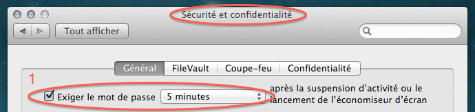

Залочить мак с клавиатуры
Оказывается, не все знают, как можно залочить мак с клавиатуры.
Идем в настройки безопасности и ставим галочку напротив опции "Спрашивать пароль после активации скринсейвера":

Потом идем в настройки клавиатуры, находим там группу шорткатов "Services" и вешаем шорткат на запуск скринсейвера:

Ну и напомню про самую клевую штуку — повесить Spotlight на Caps Lock!